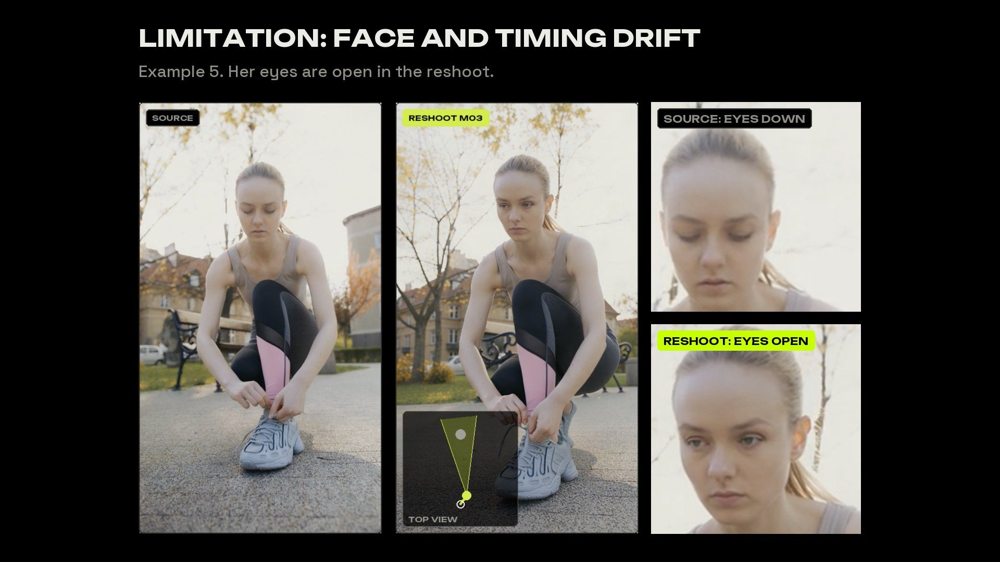
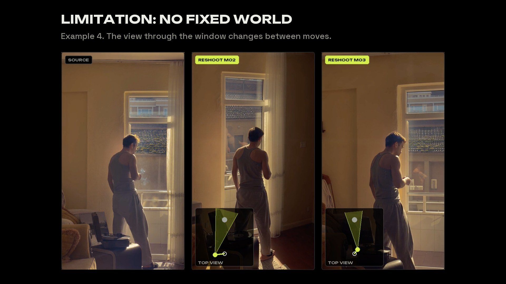

Reshoot any video in 4D, inside ComfyUI.
- Runs locally
- Open weights
- Every step a ComfyUI node
- Final frames by LTX 2.3
How it works
Why 4D
You direct inside a 4D capture of the real scene: real scale, the real source camera path, the person's real motion and timing. The retake is driven by that geometry, and the pixels come from reshooting the real footage, so the person, place and motion stay theirs. LTX 2.3 renders every final frame. The capture is also a reusable asset, ready for video models that take 3D conditioning.
Inside ComfyUI
- Camera keysKey the camera's position, aim and roll at any moment. Paths between keys run as smooth orbits or splines.
- Camera view and editor viewLook through the shot camera, or press C to step outside and see the capture, the path and every key.
- Blender-style view gizmoClick a dot for top, front or side, or drag it to orbit around the 4D capture.
- A timeline built for shotsPlay, shuttle with J / K / L, step frames and jump between keys. Shift-select keys to move, rotate or retime them together.
- PresetsStart from an arc, push, crane, orbit or bullet-time move, then edit the keys.
- Portable camera pathsPaths export relative to the source camera, so a move made on one capture replays on another.
Results
Each example: the source video, then three new camera moves. The top view on each reshoot shows the path; the readouts show how far it moves.
Limitations


Install
- Set up Capture and its models on a CUDA machine.
- Add Reshoot 4D to
ComfyUI/custom_nodes/. - Install ReDirector and LTX 2.3, then restart ComfyUI.
Installation guide →Models and licences →Credits →
Copyright (C) 2026 itsmetamike. AGPL-3.0. Models keep their own licences; see the model guide. Built with assistance from Claude Code and Codex.